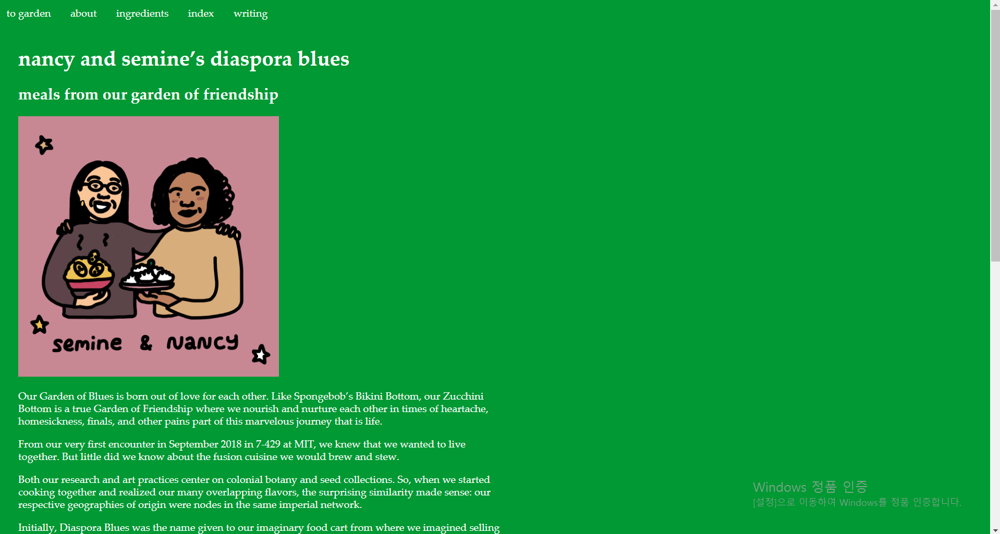
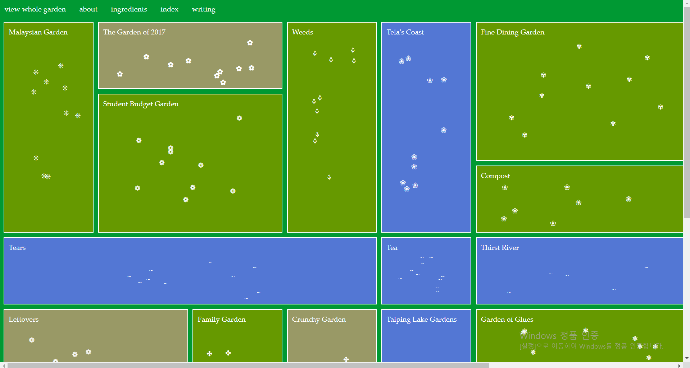
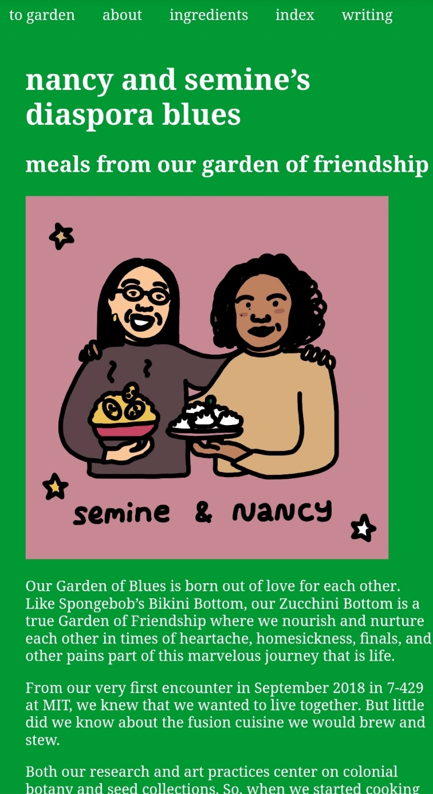
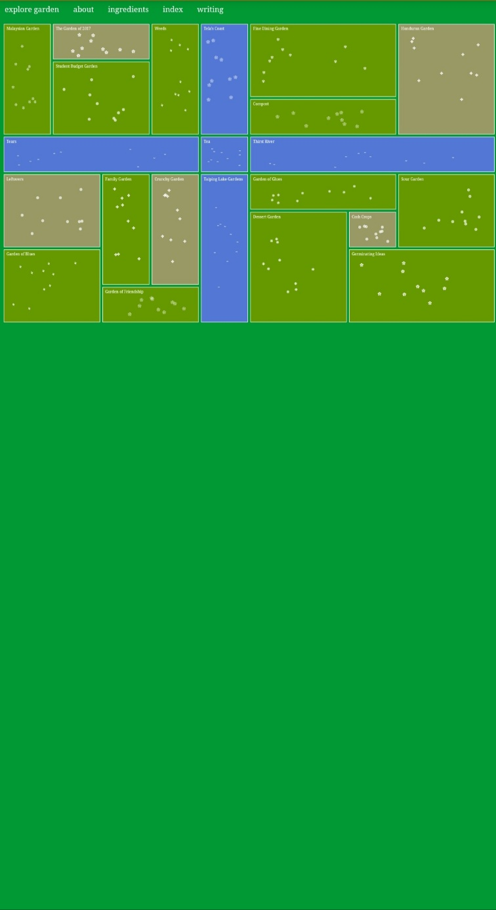

garden of blues
| pc |  |  |
| 모바일 |  |  |
들어가자마자 보이는 꽃밭 같은 모습으로 만든 페이지가 개성 있다. 사이트 이름에 가든이 들어가 있는 것처럼 여러 가지의 작은 꽃 모양의 조각들을 분산시켜서 배치해놓았다. 조각들을 누르면 다르게 배치된 버전으로 바뀌는 효과를 넣어서 다양한 재미를 부여했다. 사이트의 전체적인 색감을 초록과 조화롭게 보이는 색을 사용해서 정원이라는 개념을 더 강조했다. 작은 조각들을 누르면 나오는 요리의 조리과정들을 적은 글과 함께 요리 과정의 사진이나 완성된 요리 사진을 배치해 방문자가 잘 이해할 수 있게 만들었다. 어떠한 조각들을 눌러도 초록 배경에 하얀 글자가 나오도록 구성하여서 통일성을 보여준다. 모바일 화면에서 편하게 정원을 볼 수 있도록 확장과 축소의 정원을 선택하는 효과를 넣어놓았다. 또한 세로가 긴 화면을 고려하여 정원을 제외한 연결되는 페이지는 모바일로 보기 편하게 구성되었다.